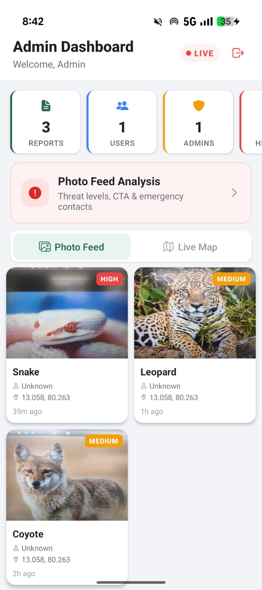
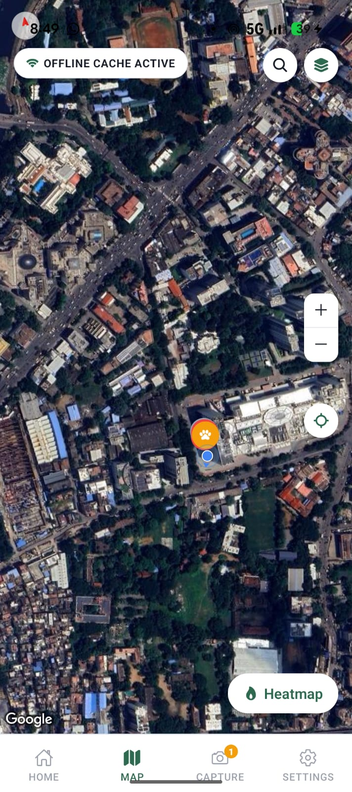
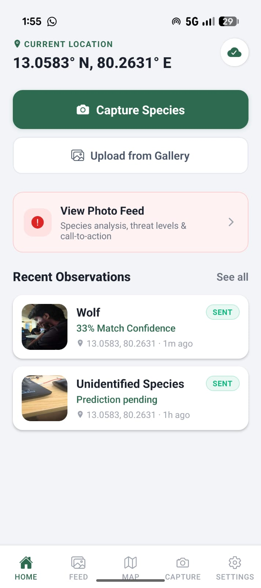
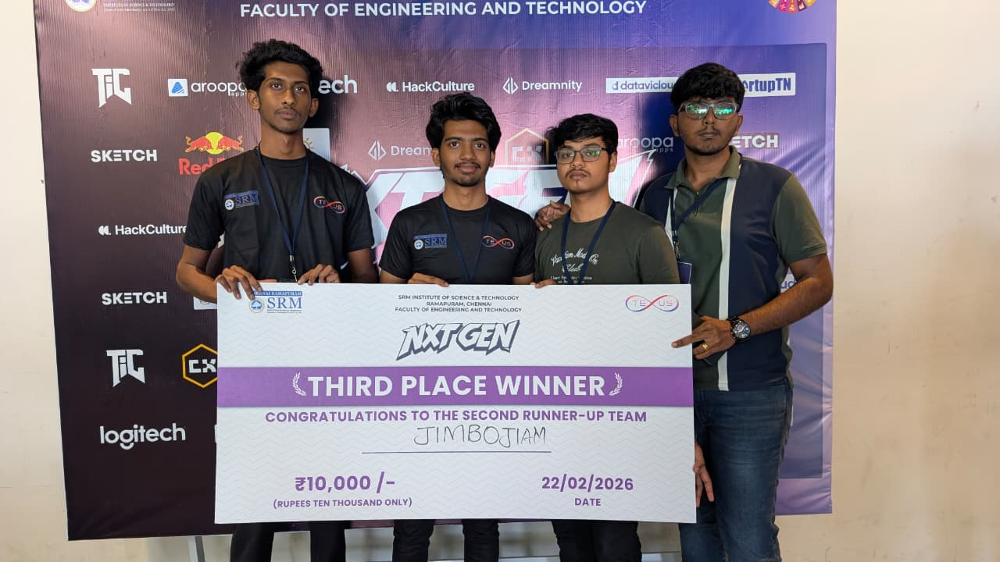

Offline-first
Capture first, sync later with resilient field workflows.
Actively Building • Field Pilots in Progress
Invadr helps field teams capture geo-tagged evidence, run AI-assisted triage, sync from low-connectivity zones, and turn observations into outbreak alerts and intervention plans.
Capture first, sync later with resilient field workflows.
Species prediction with confidence and risk stratification.
Designed for rural, forest, and no-network conditions.
Platform Architecture
Expo React Native app with role-based access and offline-first report capture: photo, notes/audio, timestamp, and GPS.
FastAPI services for auth, report ingestion, model inference, analytics APIs, and role-based admin access.
Command center for live field intelligence, report triage, and coordinated response planning.
Satellite time-series change detection and LoRa edge telemetry support for no-network transmission.
End-to-End Flow
Working Prototype
Replace the placeholders below with your latest screenshots or field photos as development milestones progress.



Execution Roadmap
Village-level pilot with ranger teams and baseline monitoring.
District expansion with admin command center and trend analytics.
Regional biosecurity deployment with predictive foresight and LoRa relays.
Milestone Achievement
Winner • Hackathon Champion
This recognition validates our mission to build an invasive species intelligence platform that works in remote, low-network environments and helps teams act earlier.
Invadr secured ₹10,000 in prize funding after winning the hackathon for its real-world environmental monitoring solution.
We are actively moving from prototype validation to broader deployment readiness with continued field feedback.
